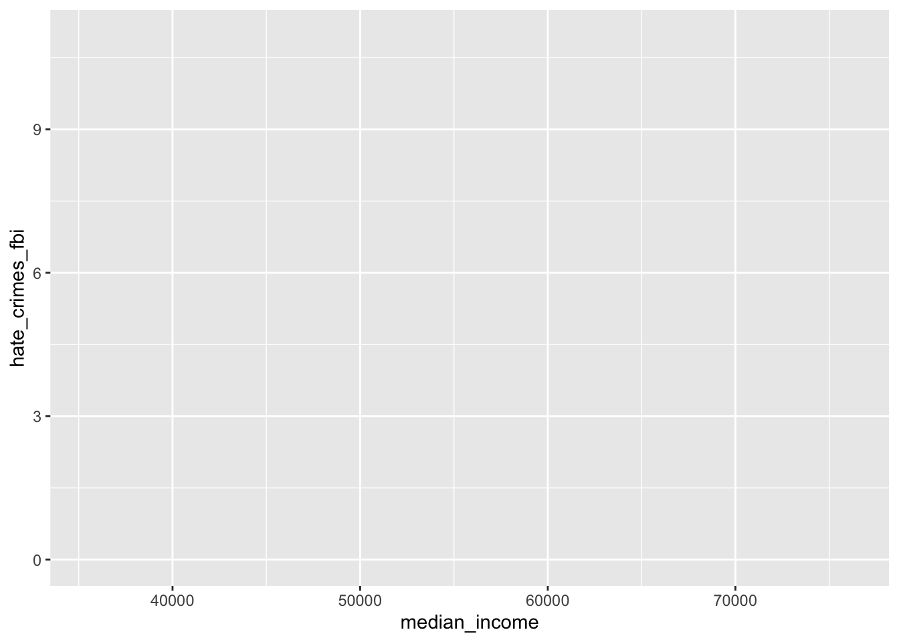

library(tidyverse)Week 3: Data Visualization
ggplot2
In the slides, we showed that statistics alone may lead to a misunderstanding of the data. Therefore, when working with new data, we should always make some visualizations to help us understand the data. A common way for plotting in R today is through ggplot2.
ggplot2 is an R package (located in tidyverse) for “decoratively creating graphics”
- https://ggplot2.tidyverse.org/reference/
Example: Hate crimes and income inequality
A FiveThirtyEight article published in 2017 claimed that higher rates of hate crimes were tied to greater income inequality.
https://fivethirtyeight.com/features/higher-rates-of-hate-crimes-are-tied-to-income-inequality/
- FiveThirtyEight publishes their data sets - let’s investigate for ourselves.
- Data set is posted in BlueLine. Download this data set, and save it to your computer.
Follow these steps to read the data into RStudio:
- In the Environment tab, click “Import Dataset”. Since this is a CSV document, you want to import a text file.
- Navigate to your CSV data set. Make sure that the first row contains column names.
- Import the data.
Another way to do this:
- Put the data file next to the Rmd file.
- In the console, print
read.csv(hate.crimes.csv)See ?read.csv for more information about this function
hate_crimes <- read.csv("./data/hate_crimes.csv")
glimpse(hate_crimes)Rows: 51
Columns: 13
$ state <chr> "Alabama", "Alaska", "Arizona…
$ region <chr> "South", "West", "West", "Sou…
$ median_income <int> 42278, 67629, 49254, 44922, 6…
$ unemployment <dbl> 0.060, 0.064, 0.063, 0.052, 0…
$ share_population_in_metro_areas <dbl> 0.64, 0.63, 0.90, 0.69, 0.97,…
$ share_population_with_high_school_degree <dbl> 0.821, 0.914, 0.842, 0.824, 0…
$ share_non_citizen <dbl> 0.02, 0.04, 0.10, 0.04, 0.13,…
$ share_white_poverty <dbl> 0.12, 0.06, 0.09, 0.12, 0.09,…
$ gini_index <dbl> 0.472, 0.422, 0.455, 0.458, 0…
$ share_non_white <dbl> 0.35, 0.42, 0.49, 0.26, 0.61,…
$ share_voters_voted_trump <dbl> 0.63, 0.53, 0.50, 0.60, 0.33,…
$ hate_crimes_splc <dbl> 0.12583893, 0.14374012, 0.225…
$ hate_crimes_fbi <dbl> 1.8064105, 1.6567001, 3.41392…head(hate_crimes) state region median_income unemployment share_population_in_metro_areas
1 Alabama South 42278 0.060 0.64
2 Alaska West 67629 0.064 0.63
3 Arizona West 49254 0.063 0.90
4 Arkansas South 44922 0.052 0.69
5 California West 60487 0.059 0.97
6 Colorado West 60940 0.040 0.80
share_population_with_high_school_degree share_non_citizen
1 0.821 0.02
2 0.914 0.04
3 0.842 0.10
4 0.824 0.04
5 0.806 0.13
6 0.893 0.06
share_white_poverty gini_index share_non_white share_voters_voted_trump
1 0.12 0.472 0.35 0.63
2 0.06 0.422 0.42 0.53
3 0.09 0.455 0.49 0.50
4 0.12 0.458 0.26 0.60
5 0.09 0.471 0.61 0.33
6 0.07 0.457 0.31 0.44
hate_crimes_splc hate_crimes_fbi
1 0.12583893 1.8064105
2 0.14374012 1.6567001
3 0.22531995 3.4139280
4 0.06906077 0.8692089
5 0.25580536 2.3979859
6 0.39052330 2.8046888A simple plot?
Basic Format of a Plot:
data and aesthetics + plot type + options
The data, aesthetics, and plot type are necessary to create a plot. For example, below is what happens when we just specify the data and aesthetics.
ggplot(hate_crimes, aes(x=median_income, y=hate_crimes_fbi))
Variable type
After specifying the data and aesthetics, we need to decide the plot type. In order to do that, we need to know the variable type(s). There are two different ways to distinguish the variables.
By function:
- response variable
- explanatory variable
By value type:
- continuous variable
- categorical variable
Type of plots
1. Visualize one continous variable.
Usually for the response variable using histograms and density plots
(a) Histograms
(b) Density Plots
(c) Box Plots
What is the difference between box-plot and histogram/density plot? Box-plot shows the median but not the distribution.
2. Visualize one categorical variable, usually for the response variable using a bar-plot
3. Visualize two continous variables.
Focus on showing the relation between them. Can be response variable + explanatroy variable. Can also be explanatory variable + explanatory variable.
(a) Scatterplots
(b) Line plots and Smooth Line Plots to connect the points in the scatterplot.
The Smooth Line Plots help show the trend due to smoothness
5. Visualize one continuous variable and one categorical variable (Multiple groups)
Sometimes we want to compare the variable(s) across multiple groups. eg: compare median income across different region. Which plots can compare multiple group?
Theses are called side-by-side plots.
Wait, how can I know which group is which group?
Include options like color and size
Adding plot title and changing axis titles
Add x-axis, y-axis labels and title
Faceting by groups
Instead of putting all groups information into one page, you can do by each panel.
Try it for yourself
- Suppose we are interested in the unemployment rate and want to see its distribution.
- Suppose we want to show the relation between unemployment rate and median income.
- Report an approximate median for the unemployment rate.
- Show the unemployment rate across different region. Use color to indicate different regions.
- Show the relation between unemployment rate and FBI hate crime rate. Use size to indicate gini index. Make sure to include axis labels and title.
- Plot the distribution of gini index and put differnet region on different panel.
Weather patterns
The data set Weather contains data on weather-related variables for several world cities.
#install.packages(mosaicData)
library(mosaicData)
data(Weather)
glimpse(Weather)Rows: 3,655
Columns: 25
$ city <chr> "Auckland", "Auckland", "Auckland", "Auckland", "Aucklan…
$ date <date> 2016-01-01, 2016-01-02, 2016-01-03, 2016-01-04, 2016-01…
$ year <dbl> 2016, 2016, 2016, 2016, 2016, 2016, 2016, 2016, 2016, 20…
$ month <int> 1, 1, 1, 1, 1, 1, 1, 1, 1, 1, 1, 1, 1, 1, 1, 1, 1, 1, 1,…
$ day <dbl> 1, 2, 3, 4, 5, 6, 7, 8, 9, 10, 11, 12, 13, 14, 15, 16, 1…
$ high_temp <dbl> 68, 68, 77, 73, 69, 69, 71, 77, 69, 71, 75, 69, 71, 75, …
$ avg_temp <dbl> 65, 66, 72, 66, 62, 63, 66, 70, 66, 66, 67, 66, 66, 68, …
$ low_temp <dbl> 62, 64, 66, 60, 55, 57, 60, 64, 64, 62, 59, 62, 62, 62, …
$ high_dewpt <dbl> 64, 64, 70, 66, 55, 54, 59, 72, 68, 63, 61, 66, 61, 63, …
$ avg_dewpt <dbl> 60, 63, 67, 60, 52, 51, 54, 67, 61, 58, 58, 62, 57, 61, …
$ low_dewpt <dbl> 55, 61, 64, 54, 48, 46, 50, 59, 55, 55, 54, 59, 54, 59, …
$ high_humidity <dbl> 100, 100, 100, 100, 82, 88, 83, 100, 100, 88, 94, 100, 8…
$ avg_humidity <dbl> 82, 94, 91, 76, 69, 65, 65, 92, 81, 76, 72, 87, 73, 80, …
$ low_humidity <dbl> 68, 88, 74, 53, 56, 46, 53, 83, 64, 64, 53, 78, 64, 65, …
$ high_hg <dbl> 30.15, 30.04, 29.80, 30.12, 30.21, 30.24, 30.24, 30.01, …
$ avg_hg <dbl> 30.09, 29.90, 29.73, 29.90, 30.14, 30.22, 30.13, 29.79, …
$ low_hg <dbl> 30.01, 29.80, 29.68, 29.77, 30.09, 30.18, 30.04, 29.62, …
$ high_vis <dbl> 6, 6, 6, 6, 6, 6, 6, 6, 6, 6, 6, 6, 6, 6, 6, 6, 6, 6, 6,…
$ avg_vis <dbl> 6, 5, 6, 6, 6, 6, 6, 6, 6, 6, 6, 6, 6, 6, 6, 6, 6, 6, 6,…
$ low_vis <dbl> 4, 1, 1, 6, 6, 6, 6, 2, 4, 6, 6, 3, 6, 6, 6, 6, 6, 2, 6,…
$ high_wind <dbl> 21, 33, 18, 15, 13, 17, 22, 21, 18, 20, 17, 16, 18, 17, …
$ avg_wind <dbl> 15, 21, 12, 10, 7, 8, 12, 14, 11, 15, 10, 8, 13, 9, 7, 4…
$ low_wind <dbl> 28, 46, NA, NA, NA, 28, 25, 28, 29, NA, 26, NA, NA, NA, …
$ precip <chr> "0", "0", "0", "0", "0", "0", "0", "0", "0", "0", "0", "…
$ events <chr> "Rain", "Rain", "Rain", "Rain", NA, NA, "Rain", "Rain", …(a). We want to study the average temperature. First, we want to see its distribution. How would we do this?
(b). Next, we want to study the distribution of average temperature across different cities. How would we do this?
(c). The average temperature may be related to date. How to show the relation between temperature and date?
(d). Maybe different city has totally different trend on average temperature (ie. relationship between temperature and date grouped by city).
(e). What if we only care about one city? Show the relationship between temperature and date for Beijing only.
(f). Instead of the date, we can also use the month. Show the relationship between month and temperature (for Beijing).
(g). Show the distribution of average temperature for the Beijing data set by month.
(h). Show the relationship between the low temperature and the high temperature colored by month